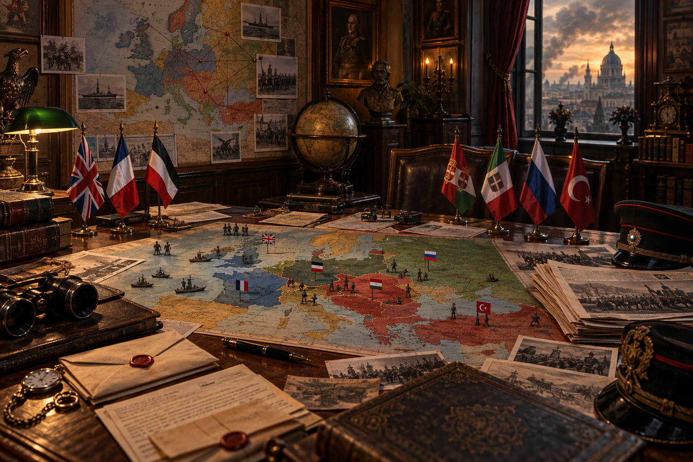

DAS
PULVERFASS
EUROPA
Ein Lern-Escape-Game über die Vorgeschichte, den Verlauf und die Folgen des Ersten Weltkriegs. Löse Akten, sichere Wissen und bestehe die Abschlussprüfung.

LEHRPLANPLUS
G 9.2
G 9.2
Ein Lern-Escape-Game über die Vorgeschichte, den Verlauf und die Folgen des Ersten Weltkriegs. Löse Akten, sichere Wissen und bestehe die Abschlussprüfung.
